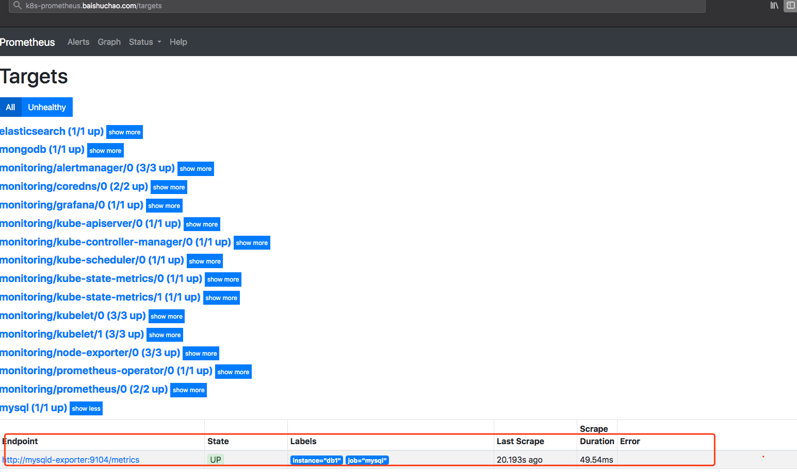
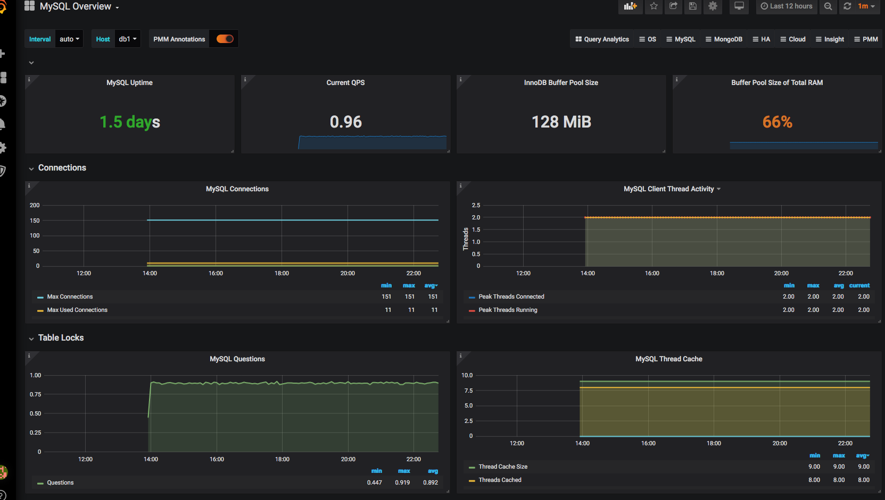
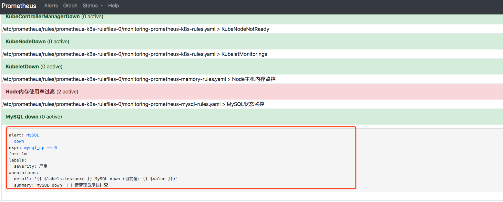

概述
Prometheus（普罗米修斯）是一套开源的监控&报警&时间序列数据库的组合，起始是由SoundCloud公司开发的。随着发展，越来越多公司和组织接受采用Prometheus，社区也十分活跃，他们便将它独立成开源项目，并且有公司来运作。Google SRE的书内也曾提到跟他们BorgMon监控系统相似的实现是Prometheus。现在最常见的Kubernetes容器管理系统中，通常会搭配Prometheus进行监控。
Prometheus基本原理是通过HTTP协议周期性抓取被监控组件的状态，这样做的好处是任意组件只要提供HTTP接口就可以接入监控系统，不需要任何SDK或者其他的集成过程。这样做非常适合虚拟化环境比如VM或者Docker 。
Prometheus应该是为数不多的适合Docker、Mesos、Kubernetes环境的监控系统之一。
输出被监控组件信息的HTTP接口被叫做exporter 。目前互联网公司常用的组件大部分都有exporter可以直接使用，比如Varnish、Haproxy、Nginx、MySQL、Linux 系统信息 (包括磁盘、内存、CPU、网络等等)，具体支持的源看：https://github.com/prometheus。
与其他监控系统相比，Prometheus的主要特点是：
一个多维数据模型（时间序列由指标名称定义和设置键/值尺寸）。
非常高效的存储，平均一个采样数据占~3.5bytes左右，320万的时间序列，每30秒采样，保持60天，消耗磁盘大概228G。
数据库授权
1
2
3
4
5
6
7
8
9
| mysql> CREATE USER 'exporter'@'%' IDENTIFIED BY 'xylxydt@1234';
Query OK, 0 rows affected (0.05 sec)
mysql> GRANT PROCESS, REPLICATION CLIENT ON *.* TO 'exporter'@'%';
Query OK, 0 rows affected (0.01 sec)
mysql>
mysql> GRANT SELECT ON performance_schema.* TO 'exporter'@'%';
Query OK, 0 rows affected (0.00 sec)
|
基于kubernetes安装mysql_exporter
1
2
3
4
5
6
7
8
9
10
11
12
13
14
15
16
17
18
19
20
21
22
23
24
25
26
27
28
29
30
31
32
33
34
35
36
37
38
39
| root@ks-master:~# cat mysql_exporter.yaml
apiVersion: extensions/v1beta1
kind: Deployment
metadata:
labels:
k8s-app: mysqld-exporter
name: mysqld-exporter
spec:
selector:
matchLabels:
k8s-app: mysqld-exporter
template:
labels:
k8s-app: mysqld-exporter
name: mysqld-exporter
spec:
containers:
- env:
- name: DATA_SOURCE_NAME
value: exporter:xylxydt@1234@(mysql.k8s:3306)/
image: prom/mysqld-exporter
imagePullPolicy: Always
name: mysqld-exporter
apiVersion: v1
kind: Service
metadata:
labels:
k8s-app: mysqld-exporter
name: mysqld-exporter
namespace: monitoring
spec:
ports:
- name: mysqld-exporter
port: 9104
protocol: TCP
targetPort: 9104
selector:
k8s-app: mysqld-exporter
type: ClusterIP
|
1
| root@ks-master:~# kubectl apply -f -n monitoring mysql_exporter.yaml
|
配置Prometheus
1
2
3
4
5
6
7
8
9
10
11
12
13
14
15
16
17
18
19
20
21
22
23
24
| root@ks-master:~# kubectl edit -n monitoring cm prometheus-config
......
- source_labels:
- __meta_kubernetes_namespace
target_label: namespace
- source_labels:
- __meta_kubernetes_service_name
target_label: service
- source_labels:
- __meta_kubernetes_pod_name
target_label: pod
- source_labels:
- __meta_kubernetes_service_name
target_label: job
replacement: ${1}
- target_label: endpoint
replacement: web
- job_name: mysql
static_configs:
- targets: ['mysqld-exporter:9104']
labels:
instance: db1
|
在prometheus-config 中添加mysql job_name即可
修改配置文件重新加载配置
1
| xcn@baishuchaodeMacBook-Pro ~> curl -X POST http:
|
验证是否生效

state 为up则为正常

可以看到很多mysql监控指标，则为正常
grafana
模版id为7362

添加告警规则rules
1
2
3
4
5
6
7
8
9
10
11
12
13
14
15
16
17
18
19
20
21
22
23
| root@ks-master:~/kubernetes/prometheus_rules# cat prometheus-mysql-rules.yaml
apiVersion: monitoring.coreos.com/v1
kind: PrometheusRule
metadata:
labels:
prometheus: k8s
role: alert-rules
name: prometheus-mysql-rules
namespace: monitoring
spec:
groups:
- name: MySQL状态监控
rules:
- alert: MySQL down
annotations:
detail: "{{ $labels.instance }} MySQL down (当前值: {{ $value }})"
summary: "MySQL down！！！请管理员尽快排查"
expr: mysql_up == 0
for: 1m
labels:
severity: 严重
root@ks-master:~/kubernetes/prometheus_rules# kubectl apply -f prometheus-mysql-rules.yaml
|
